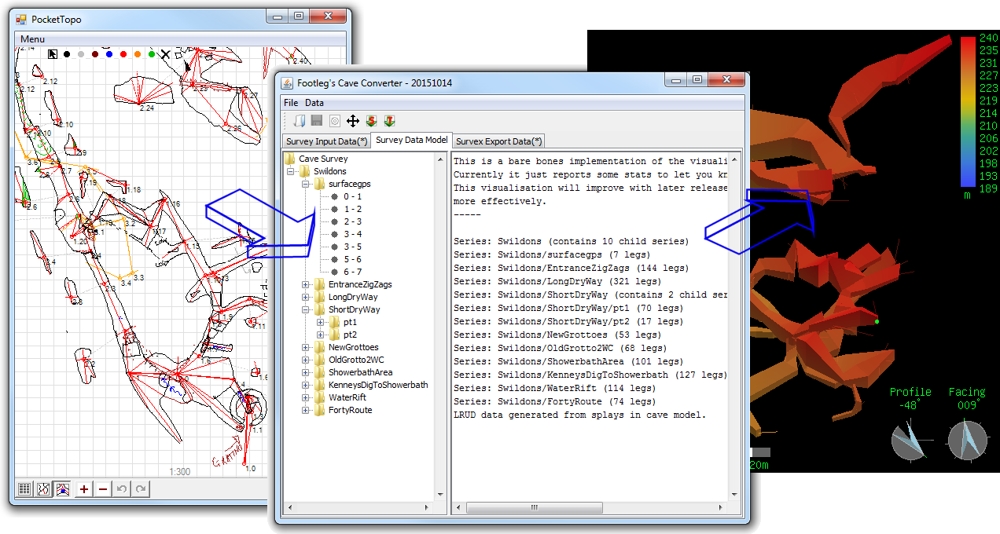
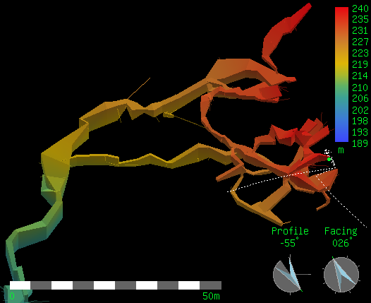

Cave Converter is a program for converting cave survey data from one format into another. It was originally written as a tool to enable Survex format survey data to be generated from PocketTopo data collected underground on a PDA, but it has evolved to support a number of useful conversions.

Converting data from a PocketTopo survey to a 3D solid model in the Survex viewer
Currently Cave Converter is able to read the following survey data file formats:
It can convert to the following formats:
Cave Converter is written in Java and consists of a command line tool and a windowed application (new in 2015). You will need a Java runtime (v7 or later) installed on your computer to run the converter. In order to run the graphical interface, unzip the download into any folder on your computer, and double click on the CaveConverterGUI.jar to launch the application.
Download the latest version here: CaveConverter.zip
The source code can be downloaded from the Cave Converter source code page.
Older releases can be downloaded from the release archive page.
|
Cave Converter is free software: you can redistribute it and/or modify
it under the terms of the GNU General Public License as published by
the Free Software Foundation, either version 3 of the License, or
(at your option) any later version.
Cave Converter is distributed in the hope that it will be useful, but WITHOUT ANY WARRANTY; without even the implied warranty of MERCHANTABILITY or FITNESS FOR A PARTICULAR PURPOSE. See the GNU General Public License for more details. |
If you want to run the command line tool, then see the command line reference page.
A full list of all the new features in each release can be found in the change log file in the download, but this page contains an overview of the main features of Cave Converter.
Survey data collected with a DistoX type device will typically feature splay legs to measure the distance from survey stations to the passage ceiling, walls and floor. But many cave survey data processing applications still use the older Left-Right-Up-Down (LRUD) measurements which were traditionally collected during analogue instrument surveying trips. So in order to view a 3D model with solid passages in these applications viewers, you need to convert the splay legs into LRUD data. Cave Converter is able to do this conversion automatically. So even very complex systems surveyed with a DistoX using splays can be converted into a Survex data file format with the passage data blocks required to render the passages as solid tubes.

Model of Swildons Hole entrance series generated from PocketTopo survey using Cave Converter
To load an existing survey into PocketTopo on a PDA in order to extend a survey with reference to the existing data for the cave, you can convert to Toporobot format using the Cave Converter. Then import the Toporobot file into PocketTopo on the PDA. The input survey data could be read from a Compass file, or a Survex file. Where a Survex file contains formats which Cave Converter is not yet able to read, you can instead process the data in Survex to generate a .3d file, and then using Survex convert this to a DXF file (right-click on a .3d file to select this option from the pop-up menu in Windows Explorer). Cave Converter can then read this DXF file and generate a Toporobot file. Converting survey data to Toporobot will unfortunately cause all the survey station numbers and series names to be changed. This is because Toporobot format requires survey series to consist only of linear chains of survey stations. Junctions are not allowed in these chains, so junctions in the cave require a new chain to be started. This means that data from other formats cannot be simply converted, so all stations are renumbered and organised into new numbered series to conform to these constraints of the Toporobot format.
Paperless surveying using PocketTopo software on a PDA to collect survey data with a DistoX is becoming increasingly popular. But the only export options to get data out from PocketTopo are a Therion format or plain text. If you want to use Survex to process your data then Cave Converter can read the plain text export files from PocketTopo, saving you from having to edit the data by hand into Survex format. If you want to work in another format (e.g. Compass) then send me a request to support that format in a future version of Cave Converter.
Sometimes the survey data for a project from the past has been lost, and all that remains is some processed output. Cave Converter can regenerate editable survey data from DXF files where the survcey centreline is represented by straight line objects or polylines. This includes DXF files generated by Survex from Survex .3d files. The Aven viewer in Survex can export a DXF file from a cave model, or right-click on a .3d file in Windows Explorer to select the Convert to DXF option from the pop-up menu.
While Cave Converter can regenerate survey data files from DXF files generated from Survex .3d files, you will not get back the complete original data. What you do get is the equivalent calculated survey leg data (tape, compass, clino) for the positions of the stations in the DXF file. So any loop closure corrections and instrument calibrations will have already been applied to the data. This feature is really intended as a way to recover some sort of workable data when the original data has been lost and only the 3d files remain. Some small rounding errors occur during the Conversion to DXF from the .3d file, so the exact positions of survey stations and the cave length reported may differ by a few cm compared to the original data. This is because in the DXF file, Survex has rounded all station positions to the nearest 1cm.
Cave Converter can create LRUD passage data blocks for Survex files containing splays. Just read and write Survex format, using the LRUD option. The Survex file reader in Cave Converter does not currently read existing passage data blocks. So be aware that existing passage data blocks will be removed if a Survex file is read in and written out again. However if the Survex file contains splays and the lrud option is specified on the command line (or the Generate LRUD option is run after loading the data into the windowed application) then new passage data blocks will be generated from the splays and replace any previously present passage data blocks in the output file.
If you are reading in data files which contain extended character set symbols (e.g. accented characters or non-punctuation symbol characters) then Cave Converter will assume these files are using UTF-8 encoding by default. To specify a different encoding in the Windows application you can edit the app.properties file. (This file is written to the same folder as the CaveConverterGUI.jar file when you close the application. So run the application once and close it, then you should find the app.properties file which will contain the line 'character.set=UTF8'. Edit this line to specify an alternative character set encoding if you are not using UTF-8. See the command line reference page for more details on alternative character set codes, and also how to specify them for command line conversions.
If you have a data file which Cave Converter is not able to read correctly, then I would be happy to receive a copy of your data to enable me to work on adding support for any cases which are not handled correctly (or not handled at all). I can be contacted by email: drfootleg [at] gmail.com
If you are reading a downloaded copy of this help page then check for a more recent version online here: Cave Converter Home Page.
|
|